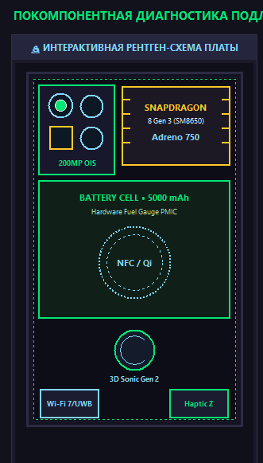
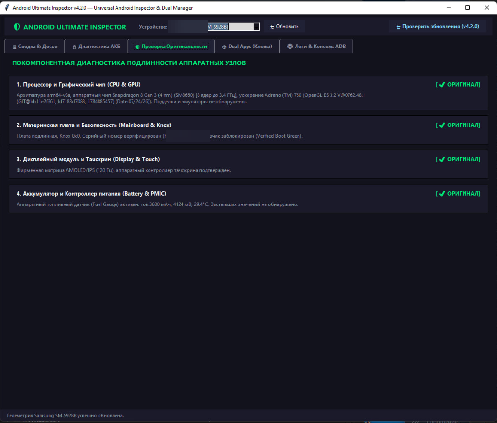
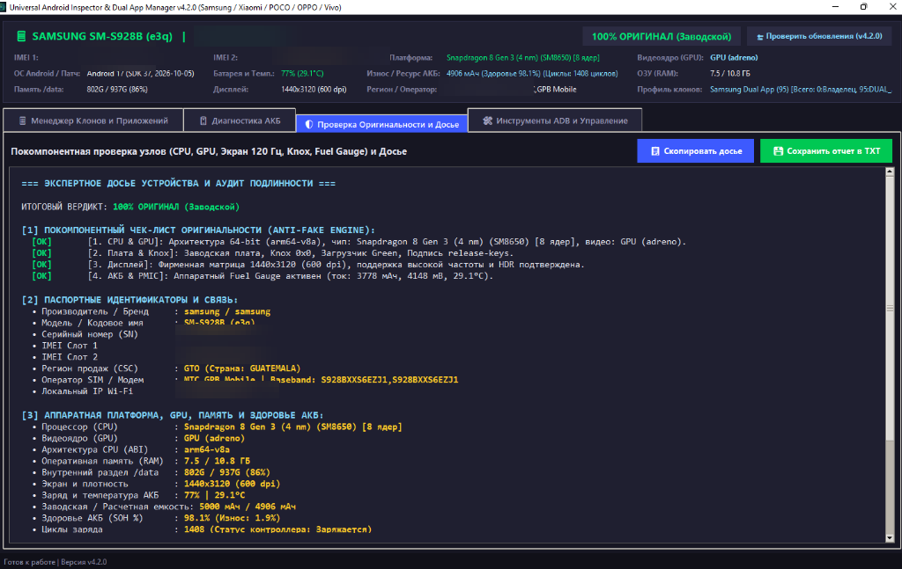
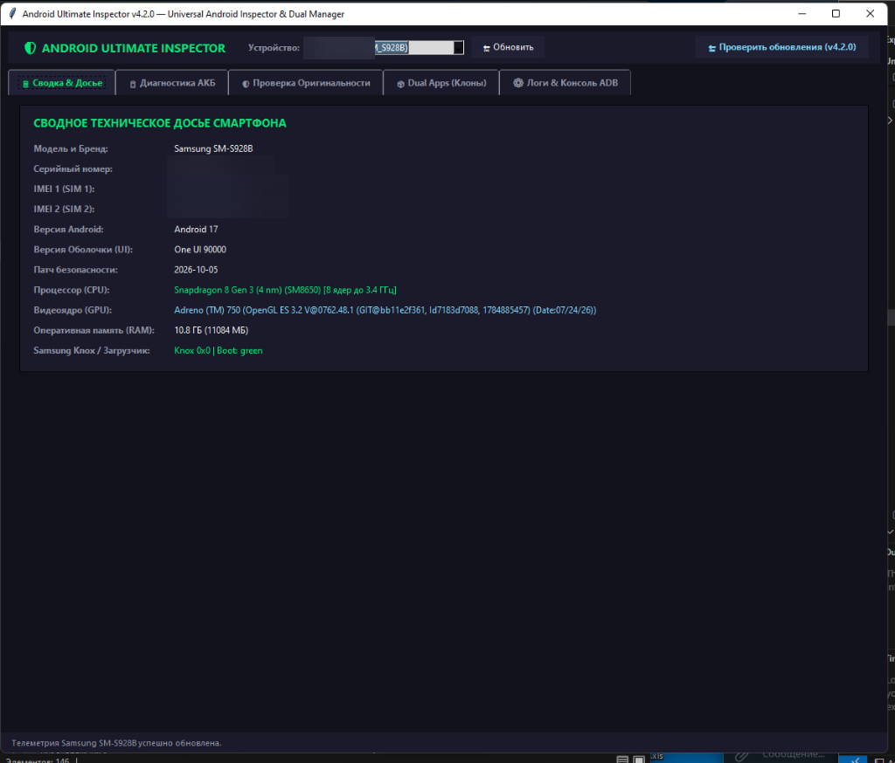

Разработчик высоконагруженных Telegram-систем, кроссплатформенных настольных и мобильных инструментов диагностики, систем автоматизации и защищенных сетевых инфраструктур. Практический опыт полного цикла: от архитектуры реляционных БД и Linux-серверов до клиентских GUI и аппаратной верификации устройств.
{
"name": "Kirill Makarov",
"handle": "FReeM1409",
"primary_stack": [
"Python (Asyncio, Aiogram, Telethon)",
"Desktop CyberGUI (Tkinter, PyInstaller)",
"System Automation (ADB, IPC Parcel)",
"High-Volume SQL (SQLite 4.5M+, Postgres)"
],
"specialization": "2.3.6 Infosec & IoT Security",
"commercial_orders": "1000+ completed",
"total_turnover": "1 000 000+ RUB",
"telegram": "@sudo_QA"
}Коммерческая разработка, обеспечение качества сложных распределенных систем и системная автоматизация.
Реальные инженерные решения: от системных низкоуровневых десктоп-утилит до Highload Telegram ботов и GameDev.
Флагманский десктоп-комбайн диагностики Android и скрытого клонирования
Флагманский десктоп-комбайн диагностики Android и скрытого клонирования (Python, Tkinter Canvas, ADB, PyInstaller, GitHub Releases API). Монолитное Windows-приложение со встроенным ADB и самозаменяющимся облачным автоапдейтером. Включает покомпонентный Anti-Fake детектор по 9 узлам (CPU/GPU, Knox 0x0, матрица 120 Гц, камеры OIS, 3D Sonic сканер, барометр IP68), интерактивную 2D рентген-схему платы, расчет истинного здоровья АКБ (Samsung Fuel Gauge ASOC / деградация Li-Ion), скрытый менеджер профилей клонирования (95/999) и экспорт официальных PDF/HTML-сертификатов с подписью SHA-256.

🔬 Рентген-схема платы
🛡 Чек-лист узлов
📋 Паспортное досье
⚙ Спецификации ОСКроссплатформенный симулятор ресторана с онлайн-кооперативом на 2–4 игроков
Кроссплатформенный симулятор ресторана: изначально разработан на Python/Pygame с облачным мостом сохранений и In-App APK апдейтером, затем перенесен на Godot Engine с поддержкой сетевого онлайн-кооператива на 2–4 игроков, выбором любого открытого дня для перепрохождения на 3 звезды, ежедневными контрактами и кастомным мультяшным UI.
Самостоятельная игра под Android на чистом Python со сборкой подписанных APK
Самостоятельная игра под Android на чистом Python со сборкой подписанных APK. Включает адаптивное сенсорное управление, систему динамического освещения и визуальных эффектов, локальное и облачное кэширование игрового прогресса, а также автоматизированную сборку через Buildozer и Android NDK.
БД SQLite на 4,46+ млн артикулов: VAG ETKA, BMW ETK, Mercedes EPC, Mitsubishi ASA
Telegram-платформа на базе БД SQLite на 4,46+ млн артикулов: VAG ETKA, BMW ETK, Mercedes EPC, Mitsubishi ASA + параллельный парсинг Exist, Elcats, Autodoc, ZZap. Мгновенная расшифровка VIN-номеров, подбор узлов по оригинальным каталожным взрыв-схемам и параллельный сбор оптовых цен.
Коммерческая e-commerce экосистема автовыдачи цифровых товаров и VPN-инфраструктура
Коммерческая e-commerce экосистема автовыдачи цифровых товаров (TON SDK WalletV5R1 + Fragment API, Playwright, UIAutomator2 Device Bridge) и VPN-инфраструктура (3X-UI API, VLESS / AmneziaWG) с оборотом > 1 000 000 ₽. Полная сквозная автоматизация процессинга платежей и безопасной доставки цифровых ключей.
Десктопный бот на базе компьютерного зрения без перехвата курсора мыши
Десктопный бот на базе компьютерного зрения (OpenCV, Tesseract OCR, MSS, Win32 API AttachThreadInput), автоматически решающий математические уровни Duolingo в фоновом режиме без перехвата курсора мыши у пользователя. Реализует неблокирующую отправку аппаратных сообщений ввода.
Интеллектуальный юзербот-автоответчик для крупных чатов
Интеллектуальный юзербот-автоответчик для крупных чатов с контекстным распознаванием вопросов по FAQ, фильтрацией рекламы и автоудалением по таймерам. Построен на библиотеке Telethon и MTProto, обеспечивает высокую скорость реакции и надежную фильтрацию спама.
Энергозависимая адаптивная криптография и фильтр eBPF/XDP (ВАК 2.3.6)
Метод адаптивной криптографии (EAAC: ChaCha8, PRESENT-80, Ascon-128) и 3-каскадный граничный шлюз (фильтр eBPF/XDP на ядре Linux + поведенческие профили MUD RFC 8520). Увеличил время жизни узлов от АКБ в 17,8–37,4 раза и снизил потери пакетов при DDoS с 98.4% до 3.4%.
Сбалансированный арсенал языков, библиотек, системных утилит и протоколов безопасности.
Инженерная база, диссертационное исследование и публикации в рецензируемых журналах ВАК.
Тема исследования: «Специфика методов обеспечения информационной безопасности в сетях Интернета вещей». Исследование включает математическое и программное моделирование методов адаптивной криптографии (EAAC), устойчивости протоколов связи к аномальным нагрузкам и построение трехкаскадных интеллектуальных граничных шлюзов на базе eBPF/XDP.